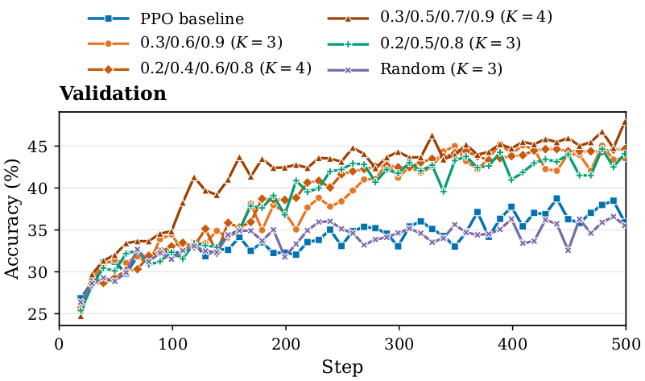

A
Flat local signal
Predicted changes concentrate near zero even when Monte Carlo values shift sharply.
Understanding and Mitigating Value Flattening
1 Shanghai Jiao Tong University2 Shanghai AI Laboratory3 Westlake University4 Nanjing University5 Tsinghua University6 The Chinese University of Hong Kong7 Nanyang Technological University
In reinforcement learning for large language models, PPO relies on a critic to estimate state values and reduce the variance of policy updates.
We uncover Value Flattening: Monte Carlo state values can change sharply across intermediate reasoning states, while critic predictions remain comparatively flat. Our analysis connects this failure mode to an implicit variance penalty in the critic loss and redundant updates from temporally correlated states.
SP³O changes only where the value loss is applied—supervising a few well-separated states per response. With as few as three supervised states, it improves within-response value resolution and consistently strengthens the learned policy across model sizes and evaluation suites.
Across LLM reasoning trajectories and a controlled FrozenLake environment, dense PPO supervision systematically loses within-response value resolution.

Predicted changes concentrate near zero even when Monte Carlo values shift sharply.
Critic value maps become progressively smoother as the FrozenLake state space grows.
States with meaningfully different success probabilities receive nearly identical predictions.
SP³O keeps the actor objective, rollout procedure, and return targets unchanged. It only changes the states that receive critic loss.
Fewer positions restrict the per-response variance penalty. Wider spacing reduces duplicated gradients from neighboring states that share nearly all of their token history.
When every position shares the terminal return target, dense MSE directly penalizes variation in predicted values within the response.
Adjacent LLM states differ by one token. Their similar representations yield aligned critic gradients and duplicated training signal.
SP³O improves standard PPO on both mathematical and out-of-distribution reasoning, while producing more stable within-iteration actor updates.

Sparse configurations with 3–8 supervised states outperform denser variants and token-level PPO. Performance peaks at three anchors.

Compared with standard PPO, the SP³O critic follows the direction and magnitude of policy-conditioned Monte Carlo values more closely.

Additional evidence from training-stage profiles, representation geometry, critic optimization, and anchor placement.



If this work helps your research, please cite the paper and star the repository.
Explore the implementation ↗@article{li2026rethinking,
title = {Rethinking Critic Learning in PPO:
Understanding and Mitigating Value Flattening},
author = {Li, Yizhuo and Yan, Jianhao and Luo, Yun and
Wang, Zhi and Wang, Futing and Tan, Rong-Xi and
Tian, Kanghui and Cui, Ganqu and Ding, Ning and
Zhao, Peilin and Li, Yafu and Cheng, Yu},
year = {2026},
note = {Preprint}
}